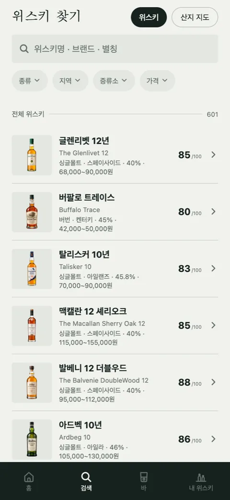

첫잔 [3] — 크롤링 대신 식약처: 수입신고 15만 건에서 위스키 504건
위스키 목록을 남의 사이트에서 베끼지 않기로 했으니, 어딘가 공적인 출처가 필요했습니다. 식약처의 수입식품 데이터에서 위스키만 골라내고 우리 목록과 맞춰 본 이틀의 기록입니다.
명세에는 2,500종이라 적었다
MVP 명세에는 초기 시드 약 2,500종이라고 적었습니다. 편의점·마트 취급 전량, 데일리샷 상위 노출, 위갤 빈출 순으로. 손으로 모은 건 464종입니다. 그것도 이름과 도수, 용량이 다 맞는지 확인할 방법이 없었습니다. Whiskybase는 약관과 CAPTCHA로 막혀 있고, 데일리샷 카탈로그는 어제 적은 이유로 애초에 선택지가 아닙니다. 필요한 건 수집처가 아니라 검증처였습니다.
첫 시도, 16건
그저께 공공데이터포털의 수입식품 제품DB API로 위스키를 뽑아 봤더니 16건이 나왔습니다. 최근 신고분 3,355건만 제공하는 서브셋이라 그렇습니다. 16건 중 13건이 시드에 없었고, 7건은 브랜드 자체가 처음 보는 것이었습니다. 클라이드빌트, 라그, 스태그 62.8, 티퍼러리. 작은 표본인데도 우리 목록에 구멍이 있다는 건 분명해졌습니다.
식품안전나라 API도 같이 보려 했는데 그날 저녁 7시부터 자정까지 점검이었습니다. 자정 5분 뒤에 다시 두드리는 스크립트를 걸어 두고 잤습니다. 아침에 본 결론은 허무했습니다. 식품안전나라는 국내 제조 식품 중심이라 수입 위스키에는 거의 쓸모가 없고, 유일하게 기대했던 바코드 DB는 2018년 이후 갱신이 멈춰 있었습니다. 라벨 스캔으로 병을 찾는 기능은 이 시점에 백로그에서 내려갔습니다.
두 번째, 15만 건을 전부 받기
어제 찾은 게 수입식품정보마루의 "제품별 한글표시사항" 데이터입니다. 식약처가 위스키를 독립 품목유형으로 관리하고, 수입 신고 때 붙는 한글 표시사항 전문이 그대로 들어 있습니다. 필터 파라미터가 없어서 전량 약 151,000건, 300페이지를 다 받아 로컬에서 걸렀습니다. 위스키만 남기니 504건입니다.
값진 건 표시사항 전문입니다. 거기서 도수와 용량을 정규식으로 뽑을 수 있고, 공식 한글 제품명과 수입사, 해외 제조업소(증류소)가 함께 옵니다. 우리 시드의 표기 불일치와 용량 오류를 잡아 줄 유일한 공식 근거입니다. 도수가 안 잡힌 47건과 용량이 안 잡힌 23건은 비워 뒀습니다. 이용 조건은 공공데이터 제0유형(자유이용)이라 상업적 이용에 제한이 없습니다.
함정이 하나 있습니다. 공개 기간이 롤링 1년입니다. 위스키는 소비기한 표시 대상이 아니라 신고 수리 후 1년만 보입니다. 지금부터 주기적으로 스냅샷을 쌓지 않으면 과거는 사라집니다.

맞춰 보니
504건을 시드 464종과 대조했습니다. 원칙은 하나, 자동으로 고치지 않는다. 이름 매칭은 확률이고, 수입신고는 같은 제품을 여러 SKU와 배치로 올리기 때문에 사람이 판단해야 하는 건이 반드시 섞입니다. 스크립트는 판단 재료만 만듭니다.
| 결과 | 건수 | 예 |
|---|---|---|
| 용량 불일치 | 9 | 메이커스 마크 시드 700ml, 신고 750ml. 글렌파클라스 21년은 신고가 200ml(미니어처 신고분) |
| 도수 불일치 | 3 | 라프로익 로어 48% 대 신고 46%. 그런데 붙은 신고는 "라프로익"(10년, 46%)이었다. 불일치가 아니라 오매칭 |
| 공식 한글명 다름 | 9 | 조니워커 블루 라벨 → 조니워커 블루. 캐네디언 클럽 1858 → 캐네디언 클럽 |
| 시드에 없는 신고 | 348 | 아래 도해 |
도수 불일치 세 건 중 하나가 오매칭이었다는 게 이 방식의 근거입니다. 유사도 83점짜리 매칭을 그대로 반영했다면 로어의 도수를 틀린 값으로 "고쳤을" 겁니다. 공식 데이터라도 붙이는 건 확률입니다.
제안 87종은 싱글몰트 56, 블렌디드 15, 버번 9, 라이 3. 아벨라워 16년, 스프링뱅크 100 프루프, 카발란 솔리스트 마데이라 캐스크처럼 "이게 왜 없었지" 싶은 병들이 나왔습니다. 지역과 카테고리는 기존 464종에서 브랜드 맵을 만들어 물려줬고, 물려줄 브랜드가 없으면 나라 이름만 적었습니다. 아일라인지 스페이사이드인지 모르면 비워 둡니다.
사진도 같은 방식으로
오늘은 병 사진입니다. 위키미디어 커먼즈의 공식 API로 시드에 있는 병만 한 건씩 조준 검색했고, 자유 라이선스(CC0, 퍼블릭 도메인, CC BY, CC BY-SA)만 통과시켰습니다. 비영리 조건이나 변경 금지가 붙은 건 버립니다. 50종이 붙었습니다. CC BY-SA 4.0이 25건, 3.0이 14건, 퍼블릭 도메인과 CC0가 세 건씩. 저작자, 라이선스, 원본 파일 페이지를 크레딧 파일에 같이 적었습니다. 표기 의무가 있는 라이선스이기도 하고, 나중에 어디서 왔는지 모르는 사진이 남는 게 싫어서입니다.
464종 중 50종입니다. 글렌리벳 12, 발베니 더블우드 12, 라프로익 10, 아드벡 10 같은 유명한 병은 있고, 나머지 414종은 당분간 실루엣입니다.
남긴 규칙
공식 출처로 확인되지 않으면 비운다. 자동으로 고치지 않고 판단 재료만 만든다.
아직 안 한 것
제안 87종은 하나씩 훑어보는 중입니다. 신고명은 마케팅 제품명과 다르고 로트코드와 용량이 이름에 붙어 있어서, 시드에 넣기 전에 공식 스펙을 따로 봐야 합니다. 보류 173종은 언제 볼지 모르겠습니다.
그리고 1년 뒤 사라지는 데이터를 주기적으로 받아 두는 일은 아직 시작하지 않았습니다. 오늘 받은 504건이 첫 스냅샷이고, 두 번째는 없습니다.

Seok
연구하면서 개발합니다. 배터리 재료를 원자 단위에서 계산하는 법을 바닥부터 배우는 중입니다. → 글 더 보기